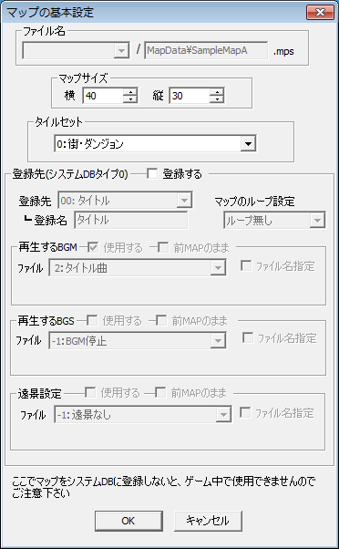

【マップの基本設定】
マップの基本設定は、メインウィンドウのこのアイコンボタンをクリックすることで開くことができます。
|  | 【ファイル名】 このマップのファイル名です。確認のため表示されているだけです。 【マップサイズ】 マップの大きさを指定します。単位はチップ数です。 【タイルセット】 マップの描画に使用するタイルセットを選択します。 【登録先】 マップファイル（拡張子mps）は通常、システムDBタイプ0番のデータベースにファイル名を書き込まないとゲームで使うことができませんが、この欄を使うことで簡単にシステムDBタイプ0番にそれらを書き込むことができます。 使用する際は「登録する」のチェックを押し、登録するマップ名と、BGM、BGS、ループ設定・遠景設定を指定してください。 |